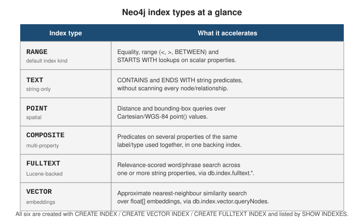

Indexes and constraints
|
This content was generated with the assistance of AI and should be verified against the official documentation before being relied on in production. |
Cypher creates and drops schema objects with the same imperative statements used elsewhere — CREATE INDEX,
CREATE CONSTRAINT, SHOW INDEXES, DROP CONSTRAINT — but a Neo4j index only ever accelerates a lookup;
it never enforces anything. Only a constraint rejects a write, and two of the four constraint kinds
(uniqueness and node key) happen to also create a backing index as a side effect.
The results on this page were produced on a Neo4j 2026.01 Community Edition server loaded with the
movie dataset plus, where a query plan needs a realistic number of nodes,
5,000 extra :Person nodes that are removed again afterwards. Community Edition rejects some statements that the
page also covers because they are Enterprise features; for those, the error Community returns is shown.
Why indexes matter: the starting point of a traversal
A graph query has to find its starting nodes before it can follow relationships. Without a suitable index the only way is to scan every node with a given label and test the property, which costs a number of store accesses proportional to the size of the label. An index turns that into a seek. Everything after the first node is pointer-following and needs no index at all (see Neo4j vs. relational and other graph databases), so indexes are about anchoring, not about speeding up every hop.
With 5,008 people loaded, the lookup of one person by name has to scan them all:
PROFILE MATCH (p:Person {name: "Keanu Reeves"}) RETURN p.born;+------------------+----+------------------------+----------------+------+---------+----------------+------------------------+
| Operator | Id | Details | Estimated Rows | Rows | DB Hits | Memory (Bytes) | Page Cache Hits/Misses |
+------------------+----+------------------------+----------------+------+---------+----------------+------------------------+
| +ProduceResults | 0 | `p.born` | 250 | 1 | 0 | 0 | 0/0 |
| | +----+------------------------+----------------+------+---------+----------------+------------------------+
| +Projection | 1 | p.born AS `p.born` | 250 | 1 | 1 | | 0/0 |
| | +----+------------------------+----------------+------+---------+----------------+------------------------+
| +Filter | 2 | p.name = $autostring_0 | 250 | 1 | 5008 | | 0/0 |
| | +----+------------------------+----------------+------+---------+----------------+------------------------+
| +NodeByLabelScan | 3 | p:Person | 5008 | 5008 | 5009 | | 0/0 |
+------------------+----+------------------------+----------------+------+---------+----------------+------------------------+
Total database accesses: 10018, total allocated memory: 64NodeByLabelScan touched every :Person node (5,008 rows) and the filter above it discarded all but one: about
ten thousand store accesses to return a single row. After creating an index on the property the same query becomes
a seek:
CREATE INDEX person_name IF NOT EXISTS FOR (p:Person) ON (p.name);
CALL db.awaitIndexes(60);
PROFILE MATCH (p:Person {name: "Keanu Reeves"}) RETURN p.born;+-----------------+----+-------------------------------------------------------+----------------+------+---------+----------------+------------------------+----------------+
| Operator | Id | Details | Estimated Rows | Rows | DB Hits | Memory (Bytes) | Page Cache Hits/Misses | Indexes Used |
+-----------------+----+-------------------------------------------------------+----------------+------+---------+----------------+------------------------+----------------+
| +ProduceResults | 0 | `p.born` | 1 | 1 | 0 | 0 | 0/0 | |
| | +----+-------------------------------------------------------+----------------+------+---------+----------------+------------------------+----------------+
| +Projection | 1 | p.born AS `p.born` | 1 | 1 | 1 | | 0/0 | |
| | +----+-------------------------------------------------------+----------------+------+---------+----------------+------------------------+----------------+
| +NodeIndexSeek | 2 | RANGE INDEX p:Person(name) WHERE name = $autostring_0 | 1 | 1 | 2 | | 0/0 | person_name: 1 |
+-----------------+----+-------------------------------------------------------+----------------+------+---------+----------------+------------------------+----------------+
Total database accesses: 3, total allocated memory: 64Three store accesses instead of ten thousand, independent of how many people exist. CALL db.awaitIndexes() waits
until the new index has been populated from the existing data: an index is created in the POPULATING state and
only the ONLINE index is used by the query planner.
The index family to choose from depends on the predicate the query uses:
on a value"] P --> SUB["Substring or suffix
on a string"] P --> GEO["Distance or bounding box
on a point"] P --> REL["Relevance-ranked words
or phrases"] P --> SIM["Nearest vectors
to an embedding"] EQ --> R["RANGE index"] SUB --> T["TEXT index"] GEO --> PT["POINT index"] REL --> F["FULLTEXT index"] SIM --> V["VECTOR index"] R -.-> C["Several properties tested together
composite RANGE index"]
Index types
Six index kinds cover different value shapes and query predicates. Two further token lookup indexes always
exist: one for node labels and one for relationship types, so that MATCH (n:Label) and MATCH ()-[:TYPE]->()
can enumerate their elements without scanning the whole store. They appear in SHOW INDEXES as type LOOKUP,
and should be left alone.

Range indexes
The default kind, and what plain CREATE INDEX creates: a B-tree-like structure over one or more
properties of a node label or relationship type, usable for equality, IN, range comparisons
(<, <=, >, >=, BETWEEN), and STARTS WITH.
// https://neo4j.com/docs/cypher-manual/current/indexes/semantic-indexes/range-indexes/
CREATE INDEX person_born_range IF NOT EXISTS
FOR (p:Person) ON (p.born);
CREATE INDEX acted_in_roles_range IF NOT EXISTS
FOR ()-[r:ACTED_IN]-() ON (r.roles);
PROFILE MATCH (p:Person) WHERE p.born >= 1960 AND p.born < 1965 RETURN p.name ORDER BY p.born;+-----------------------+----+---------------------------------------------------------------------------+----------------+------+---------+----------------+------------------------+------------+----------------------+
| Operator | Id | Details | Estimated Rows | Rows | DB Hits | Memory (Bytes) | Page Cache Hits/Misses | Ordered by | Indexes Used |
+-----------------------+----+---------------------------------------------------------------------------+----------------+------+---------+----------------+------------------------+------------+----------------------+
| +ProduceResults | 0 | `p.name` | 124 | 254 | 0 | 0 | 0/0 | | |
| | +----+---------------------------------------------------------------------------+----------------+------+---------+----------------+------------------------+ +----------------------+
| +Projection | 1 | p.name AS `p.name` | 124 | 254 | 254 | | 0/0 | | |
| | +----+---------------------------------------------------------------------------+----------------+------+---------+----------------+------------------------+ +----------------------+
| +NodeIndexSeekByRange | 2 | RANGE INDEX p:Person(born) WHERE born >= $autoint_0 AND born < $autoint_1 | 124 | 254 | 255 | | 0/0 | p.born ASC | person_born_range: 1 |
+-----------------------+----+---------------------------------------------------------------------------+----------------+------+---------+----------------+------------------------+------------+----------------------+
Total database accesses: 509, total allocated memory: 64The two predicates are fused into one NodeIndexSeekByRange, which reads 254 index entries rather than scanning
5,008 nodes. A prefix test (WHERE p.name STARTS WITH "Ke") is served by the name index the same way, which is
why a range index is also the right choice for autocomplete on the beginning of a string.
Text indexes
A text index is built for STRING properties only. It supports equality, IN, STARTS WITH, ENDS WITH and
CONTAINS, and it is the only index that can answer the last two: a range index orders its entries from the start
of the value, so neither a suffix nor a substring can seek in it. The query planner chooses a range index over a text
index when both exist and the predicate is equality or a prefix.
// https://neo4j.com/docs/cypher-manual/current/indexes/semantic-indexes/text-indexes/
CREATE TEXT INDEX movie_title_text IF NOT EXISTS
FOR (m:Movie) ON (m.title);
PROFILE MATCH (m:Movie)
WHERE m.title CONTAINS "Matrix"
RETURN m.title ORDER BY m.title;+------------------------+----+--------------------------------------------------------------+----------------+------+---------+----------------+------------------------+---------------+---------------------+
| Operator | Id | Details | Estimated Rows | Rows | DB Hits | Memory (Bytes) | Page Cache Hits/Misses | Ordered by | Indexes Used |
+------------------------+----+--------------------------------------------------------------+----------------+------+---------+----------------+------------------------+---------------+---------------------+
| +ProduceResults | 0 | `m.title` | 0 | 2 | 0 | 0 | 0/0 | | |
| | +----+--------------------------------------------------------------+----------------+------+---------+----------------+------------------------+ +---------------------+
| +Sort | 1 | `m.title` ASC | 0 | 2 | 0 | 1360 | 0/0 | `m.title` ASC | |
| | +----+--------------------------------------------------------------+----------------+------+---------+----------------+------------------------+---------------+---------------------+
| +Projection | 2 | m.title AS `m.title` | 0 | 2 | 2 | | 0/0 | | |
| | +----+--------------------------------------------------------------+----------------+------+---------+----------------+------------------------+---------------+---------------------+
| +NodeIndexContainsScan | 3 | TEXT INDEX m:Movie(title) WHERE title CONTAINS $autostring_0 | 0 | 2 | 3 | | 0/0 | | movie_title_text: 1 |
+------------------------+----+--------------------------------------------------------------+----------------+------+---------+----------------+------------------------+---------------+---------------------+
Total database accesses: 5, total allocated memory: 1424NodeIndexContainsScan reads the index, not the nodes, to find the two matching titles. ENDS WITH uses
NodeIndexEndsWithScan in the same way. Neither this index nor a range index will help a predicate on a value
that is not a string, and a text index does not tokenize: CONTAINS "matrix" is case-sensitive and finds nothing
here, which is what the full-text index below is for.
Point indexes
Indexes POINT (Cartesian or WGS-84) properties for distance and bounding-box queries via
point.distance() or point.withinBBox().
// https://neo4j.com/docs/cypher-manual/current/indexes/semantic-indexes/point-indexes/
CREATE POINT INDEX venue_location_point IF NOT EXISTS
FOR (v:Venue) ON (v.location);
CREATE (:Venue {name: "Roxy", location: point({latitude: 51.5007, longitude: -0.1246})}),
(:Venue {name: "Lido", location: point({latitude: 48.8566, longitude: 2.3522})});
MATCH (v:Venue)
WHERE point.distance(v.location, point({latitude: 51.5, longitude: -0.12})) < 5000
RETURN v.name;+--------+
| v.name |
+--------+
| "Roxy" |
+--------+The distance is in metres for a WGS-84 point, so only the London venue is within five kilometres of the query
point. The plan for this statement starts with a NodeIndexSeekByRange on the POINT INDEX, then applies the exact
distance as a filter.
Composite indexes
A single range, text, or point index can cover more than one property of the same label or
relationship type. A composite index helps a query that supplies a predicate on every indexed property
together. A query that supplies only some of them does not use it: with the composite index
(born, name) as the only index on Person, a query on born alone, or on name alone, goes back to a label scan.
// https://neo4j.com/docs/cypher-manual/current/indexes/semantic-indexes/range-indexes/#range-indexes-composite
DROP INDEX person_name IF EXISTS;
DROP INDEX person_born_range IF EXISTS;
CREATE INDEX person_born_name_composite IF NOT EXISTS
FOR (p:Person) ON (p.born, p.name);
PROFILE MATCH (p:Person)
WHERE p.born = 1964 AND p.name = "Keanu Reeves"
RETURN p.name;
PROFILE MATCH (p:Person) WHERE p.born = 1964 RETURN p.name;+------------------+----+---------------------+----------------+------+---------+----------------+------------------------+
| Operator | Id | Details | Estimated Rows | Rows | DB Hits | Memory (Bytes) | Page Cache Hits/Misses |
+------------------+----+---------------------+----------------+------+---------+----------------+------------------------+
| +ProduceResults | 0 | `p.name` | 250 | 51 | 0 | 0 | 0/0 |
| | +----+---------------------+----------------+------+---------+----------------+------------------------+
| +Projection | 1 | p.name AS `p.name` | 250 | 51 | 51 | | 0/0 |
| | +----+---------------------+----------------+------+---------+----------------+------------------------+
| +Filter | 2 | p.born = $autoint_0 | 250 | 51 | 5008 | | 0/0 |
| | +----+---------------------+----------------+------+---------+----------------+------------------------+
| +NodeByLabelScan | 3 | p:Person | 5008 | 5008 | 5009 | | 0/0 |
+------------------+----+---------------------+----------------+------+---------+----------------+------------------------+
Total database accesses: 10068, total allocated memory: 64The output above is the query plan of the second query: born alone ignores the composite index and falls back to a
NodeByLabelScan, ten thousand store accesses to find 51 people. The first query, which tests both properties,
is a two-access NodeIndexSeek on (born, name). Order the properties in a composite index by how the queries
filter on them, and keep a separate single-property index for any property that is also queried alone.
Full-text indexes
A Lucene-backed inverted index over one or more STRING properties, queried through the
db.index.fulltext.queryNodes/queryRelationships procedures rather than a WHERE predicate. It
supports tokenized, relevance-scored search — word and phrase matching, fuzzy terms, boosting — and
can span several labels and properties at once.
// https://neo4j.com/docs/cypher-manual/current/indexes/semantic-indexes/full-text-indexes/
CREATE FULLTEXT INDEX person_movie_fulltext IF NOT EXISTS
FOR (n:Movie|Person) ON EACH [n.title, n.name];
CALL db.index.fulltext.queryNodes("person_movie_fulltext", "matrix OR keanu")
YIELD node, score
RETURN coalesce(node.title, node.name) AS hit, labels(node)[0] AS kind, round(score * 1000) / 1000 AS score
ORDER BY score DESC, hit;+------------------------------------------+
| hit | kind | score |
+------------------------------------------+
| "Keanu Reeves" | "Person" | 3.688 |
| "The Matrix" | "Movie" | 0.497 |
| "The Matrix Reloaded" | "Movie" | 0.419 |
+------------------------------------------+The index spans two labels, so one query finds both a person and films. The query string uses Lucene syntax and the
search is case-insensitive (matrix found The Matrix). A trailing ~ makes a term fuzzy, so the misspelling
matrx~ still finds both Matrix films, and a quoted string is a phrase, which returns only the one film containing
Matrix Reloaded in that order. Scores are relative: they depend on how frequent a term is across the whole indexed
corpus, so the same query scores differently on a larger database, and they should only be used to rank the
results of one query.
Vector indexes
Indexes a LIST<FLOAT> embedding property for approximate nearest-neighbour similarity search — the property Neo4j’s GraphRAG and semantic-search patterns build on. vector.dimensions must match
the embedding model’s output size, and vector.similarity_function is typically cosine or
euclidean.
// https://neo4j.com/docs/cypher-manual/current/indexes/semantic-indexes/vector-indexes/
CREATE VECTOR INDEX movie_plot_embedding IF NOT EXISTS
FOR (m:Movie) ON (m.plotEmbedding)
OPTIONS {indexConfig: {
`vector.dimensions`: 1536,
`vector.similarity_function`: "cosine"
}};Creating the index is all this page covers — for querying it, see
Vector Search & GenAI, which uses the current Cypher
SEARCH clause rather than the older db.index.vector.queryNodes procedure.
After creating the indexes above, SHOW INDEXES lists them together with the two token lookup indexes (the
composite index is the one described in the previous section):
SHOW INDEXES YIELD name, type, entityType, labelsOrTypes, properties, state
ORDER BY type, name;+-----------------------------------------------------------------------------------------------------------------+
| name | type | entityType | labelsOrTypes | properties | state |
+-----------------------------------------------------------------------------------------------------------------+
| "person_movie_fulltext" | "FULLTEXT" | "NODE" | ["Movie", "Person"] | ["title", "name"] | "ONLINE" |
| "index_1b9dcc97" | "LOOKUP" | "RELATIONSHIP" | NULL | NULL | "ONLINE" |
| "index_460996c0" | "LOOKUP" | "NODE" | NULL | NULL | "ONLINE" |
| "venue_location_point" | "POINT" | "NODE" | ["Venue"] | ["location"] | "ONLINE" |
| "acted_in_roles_range" | "RANGE" | "RELATIONSHIP" | ["ACTED_IN"] | ["roles"] | "ONLINE" |
| "person_born_name_composite" | "RANGE" | "NODE" | ["Person"] | ["born", "name"] | "ONLINE" |
| "movie_title_text" | "TEXT" | "NODE" | ["Movie"] | ["title"] | "ONLINE" |
| "movie_plot_embedding" | "VECTOR" | "NODE" | ["Movie"] | ["plotEmbedding"] | "ONLINE" |
+-----------------------------------------------------------------------------------------------------------------+Constraints
A constraint is a schema rule enforced on every write, independent of whether it also happens to create an index. Which constraints exist depends on the edition: uniqueness is available everywhere, while property existence, key and property type constraints are Enterprise Edition features.
Uniqueness constraints
Rejects a write that would give two nodes with the same label (or two relationships with the same type) equal values for the constrained property or property combination. It also creates a backing range index.
// https://neo4j.com/docs/cypher-manual/current/constraints/managing-constraints/#create-property-uniqueness-constraints
CREATE CONSTRAINT person_email_unique IF NOT EXISTS
FOR (p:Person) REQUIRE p.email IS UNIQUE;
MATCH (p:Person {name: "Keanu Reeves"}) SET p.email = "keanu@example.com";
// a different person claims the same address
MATCH (p:Person {name: "Tom Hanks"}) SET p.email = "keanu@example.com";22N80: data exception - index entry conflict. Index entry conflict: Node(10098) already exists with label `Person` and property `email` = 'keanu@example.com'.The failing statement is rolled back as a whole; nothing it did is visible afterwards. MERGE on the constrained
property becomes safe against duplicates, because MERGE (p:Person {email: "keanu@example.com"}) matches the
existing node instead of creating a second one, and two concurrent MERGE statements can no longer both create it.
Two behaviours surprise people. A constraint cannot be created while a plain index already exists on the same
label and property — the constraint needs to create that very index — and the statement fails rather than
adopting it, even with IF NOT EXISTS:
CREATE INDEX movie_released IF NOT EXISTS FOR (m:Movie) ON (m.released);
CREATE CONSTRAINT movie_released_unique IF NOT EXISTS
FOR (m:Movie) REQUIRE m.released IS UNIQUE;22N73: data exception - constraint conflicts with existing index. Constraint conflicts with already existing index '(:Movie {released})'.Drop the plain index first (DROP INDEX movie_released), then create the constraint. The second surprise is that a
constraint cannot be created over data that already violates it. Creating a uniqueness constraint on Person.born
while thousands of people share a birth year fails and names two of the offending nodes:
22N80: data exception - index entry conflict. Index entry conflict: Both Node(67) and Node(267) have the label `Person` and property `born` = 1900.Find the duplicates (MATCH (p:Person) WITH p.born AS born, count(*) AS n WHERE n > 1 RETURN born, n), repair them,
and create the constraint afterwards.
Property existence constraints
Rejects a write that would leave the constrained property missing on a node with the given label, or on a relationship of the given type. Existence constraints on node and relationship properties both require Enterprise Edition; on Community the statement is refused:
// https://neo4j.com/docs/cypher-manual/current/constraints/managing-constraints/#create-property-existence-constraints
CREATE CONSTRAINT person_name_exists IF NOT EXISTS
FOR (p:Person) REQUIRE p.name IS NOT NULL;
CREATE CONSTRAINT acted_in_roles_exists IF NOT EXISTS
FOR ()-[r:ACTED_IN]-() REQUIRE r.roles IS NOT NULL;51N27: system configuration or operation exception - not supported in this edition. Property existence constraint is not supported in community edition.(The second statement fails with the same message for the relationship form.) Without an existence constraint, the
database accepts a Person with no name, or an ACTED_IN with no roles, silently, and the application
has to guard against both; this is a main reason a production deployment that needs the guarantee chooses
Enterprise Edition.
Node key constraints
The multi-property, Enterprise-only combination of uniqueness and existence: every node with the given label must carry all of the listed properties, and no two such nodes may share the same combination of values — the closest Cypher equivalent of a relational composite primary key.
// https://neo4j.com/docs/cypher-manual/current/constraints/managing-constraints/#create-node-key-constraints
CREATE CONSTRAINT order_line_key IF NOT EXISTS
FOR (l:OrderLine) REQUIRE (l.orderId, l.lineNumber) IS NODE KEY;On Community this fails with 51N27 ... Key constraint is not supported in community edition.
Relationship key and property type constraints
The relationship-side counterpart of a node key — IS RELATIONSHIP KEY — plus
IS TYPED constraints that pin a property to a single Cypher type, both Enterprise-only.
// https://neo4j.com/docs/cypher-manual/current/constraints/managing-constraints/#create-relationship-key-constraints
CREATE CONSTRAINT rated_key IF NOT EXISTS
FOR ()-[r:RATED]-() REQUIRE (r.userId, r.movieId) IS RELATIONSHIP KEY;
// https://neo4j.com/docs/cypher-manual/current/constraints/managing-constraints/#create-property-type-constraints
CREATE CONSTRAINT person_born_typed IF NOT EXISTS
FOR (p:Person) REQUIRE p.born IS :: INTEGER;A property type constraint is the cure for the mixed-type problem described in
The property graph model: once born is constrained to INTEGER, a
write of the string "1960" is rejected. On Community the same two statements fail with
51N27 ... not supported in this edition.
Inspecting and removing schema objects
SHOW INDEXES and SHOW CONSTRAINTS list every schema object with its name, type, entity, and
properties — including the implicit index a uniqueness or node-key constraint created. Both accept
YIELD to project specific columns, and a WHERE clause to filter.
// https://neo4j.com/docs/cypher-manual/current/indexes/syntax/#indexes-list-indexes
SHOW INDEXES YIELD name, type, entityType, labelsOrTypes, properties, state;
// https://neo4j.com/docs/cypher-manual/current/constraints/managing-constraints/#constraints-list-constraints
SHOW CONSTRAINTS YIELD name, type, entityType, labelsOrTypes, properties;+--------------------------------------------------------------------------------+
| name | type | entityType | labelsOrTypes | properties |
+--------------------------------------------------------------------------------+
| "person_email_unique" | "UNIQUENESS" | "NODE" | ["Person"] | ["email"] |
+--------------------------------------------------------------------------------+Drop either by the name shown in those results — IF EXISTS makes the drop idempotent, and dropping
a uniqueness or node-key constraint also drops its backing index.
// https://neo4j.com/docs/cypher-manual/current/indexes/syntax/#indexes-drop-index
DROP INDEX person_born_range IF EXISTS;
// https://neo4j.com/docs/cypher-manual/current/constraints/managing-constraints/#constraints-drop-constraint
DROP CONSTRAINT person_email_unique IF EXISTS;Choosing and maintaining indexes
| Guideline | Why |
|---|---|
Index the property you start traversals from, not every property |
Each index is written on every change to its label and property, and occupies memory and disk. |
Prefer one range index per frequently filtered property |
Equality, |
Use |
|
Match the predicate to the index kind |
A |
Build indexes before bulk loads, constraints before |
A |
Check the state after creating one |
Only |
The query planner picks indexes automatically; USING INDEX variable:Label(property) forces a particular one for a
query when the query planner’s estimate is wrong. Use it sparingly: a hint is a promise about the schema that travels with
the query text, and it stops helping the day the index is renamed or dropped.
Related pages
-
Indexes — the full index reference this page summarizes.
-
Semantic indexes — the range, text, and point index kinds in depth.
-
Vector indexes — dimensions, similarity functions, and querying an embedding index.
-
Elasticsearch Reference — an indexing model built the opposite way round: every document is indexed by default rather than opted in per property.
-
MongoDB Reference — secondary indexes over a document collection, for contrast with indexing a property graph.